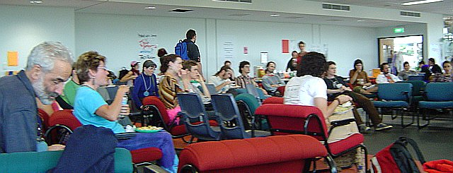
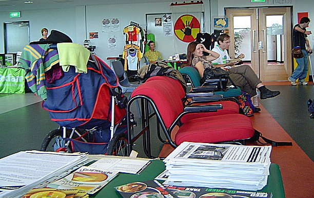

BSF 2004
Firstly for the uninitiated, what is the Brisbane Social Forum? The BSF is a meeting of minds, an accurate description might be the African word 'zingalamadumi' - a beehive of consciousness. It is an annual meeting which is meant to solidify, educate and inspire social political activism within Brisbane.
I have attended all of the three Brisbane Social Forums so far, the first two 2002, 2003 being held at the Brisbane Powerhouse. This year it was held at the University of Queensland, and as that is where I happen to work, it couldn't have been more convenient for me. Anyway I have just ridden my bike the long way home and still full of enthusiasm I have decided to write down my experiences this year whilst they are still fresh in my mind.
First up was Friday evening. First I did a quick tour around the stalls. Human rights advocates, environmentalists, anarchists, feminists, peace advocates, community aid, aboriginal advocates, almost every progressive section of our society was represented, in short for anyone concerned about our world it was a good place to breathe.
The guest speaker was late so a gentleman from Iraq spoke who had been discriminated against in Iraq for among other things refusing to paint a portait of Saddam, and had then suffered perhaps even more in our draconian detention centres. He gave a great perspective to the audience on world affairs so dominant at this moment, especially about the deep mistrust the US is held in by ordinary Iraqi's, so evident in his words. It was shameful as an Australian to listen to him tell how he had heard Australia was a friendly country, a wealthy country, and that he sincerely believed that we would want to help someone fleeing from oppression. He laid the ground well for the next address.
The main guest speaker was Julian Burnside QC, who was billed as "one of Australia's most prominent human rights advocates". He spoke passionately, eloquently and at length about the barbaric treatment of asylum seekers by the Australian government, likening their ideological treatment of these vulnerable people to that of faschist governments. This is no lifelong left wing radical either, instead a lifelong conservative Liberal voter up until 1996.
What has turned him from compliance to defiance? Having an intimate knowledge of what our government is doing to these displaced people which is best summed up by the following story. It is written from my memory so please forgive any errors or vaguaries.
A family in Iran were part of a persecuted ethnic minority. Being on the wrong side of the powerful sections of Iran was not pleasant for anybody, and this family faced daily persecution and hostility within their community.
One day their 10 year old daughter came home from school in a dazed state with her clothes disheveled, she could not bring herself to speak to explain to her parents what had happened. Upon further inspection her genitalia were found to be inflamed and she smelt of semen. She told them that she had been raped by the schools curator.
The father took his daughter immediately to the police station and filed a complaint. The case was heard in court and the judge poured scorn on the family. He stated that the girl had been cleansed by the contact with a superior ethnic group. The father became understandably irate at the judge, and he was arrested and put into gaol.
Within two days of the fathers release, they packed the families belongings, and headed for a safe place. They eventually arrived in Australia, no doubt lured by the same ideas about Australians being friendly and wealthy like other refugees. Of course it seems our apathetic attitude which allows our government to get away with violation of vulnerable people hasn't gotten out far enough yet.
Upon arriving in Australia they were put into a detention centre, prison, concentration camp, call it what you will. There, as we are all familiar with, they stayed...and stayed. The psychological effects of our detention centres has been reported on repeatedly by professionals in the field as completely devestating. As far as I am aware there is no dissenting professional opinion to this, holding them indefinitely behind razor wire, we are destroying the ability to hope and dream in these children. This young girl, now eleven, had been through difficulties in life we can scarcely imagine, the effect of detention on her was a complete emotional crippling. She was asked by someone what her hopes in life were, and she said only to be buried next to her grandmother in Iran. This is why the Australian media is not allowed in detention centres, not surprising from our government, what is surprising is that we allow it to happen.
The girl then tried to kill herself. Firstly she tried to hang herself but was found and cut down. Then she tried to swallow shampoo as she had seen others do in the camps. Again she was found and rushed to hospital for treatment, the deaths of small children obviously being too hard to explain away as necessary even for our deceitful government. Her mother was allowed to accompany her, and of course to stop these threats to our Australian lifestyle, two guards were placed on the door of the hospital. A lawyer who was concerned went to hospital that night to see what he could do for the family, the armed guards refused him entry because lawyers visiting hours finish at 5. Aussie, aussie, aussie....
The family finally were allowed an immigration meeting, not face to face, but instead on a video link up whilst still in the camp. The children were not allowed to be in the room and waited outside. The parents were interviewed, about their daughters story and their persecution in Iran.
The Department of Immigration came back with the decision that the rape hadn't happened. They had never at any stage spoken to the girl, they refused to wait for a psychological evaluation (which showed that the girl displayed all the classic symptoms of someone who had been sexaully abused), indeed one wonders what insane logic lead them to make such a decision and believe it with such certainty. The rape was not 'unproved' or 'unable to be verified', they somehow just knew it hadn't happened.
After losing, the family used their legal rights to appeal the decision, the government, using taxpayers money, tried to stop the appeal. In the middle of the case which was exposing the mindless brutatilty of our current government, the family were suddenly granted visas. This is the way our detention centres work, arbitrary logic controlling very real and vulnerable peoples lives.
He also gave other examples, a Palestinian man who couldn't return to his own country, so the government went to court, to give them the right to detain someone infinitely. They also went to court to argue that barbaric conditions were no justification for letting people out of detention. So using our money they are arguing that they can keep someone in whatever degrading state they like, for as long as they like, and theres nothing wrong with it. Think about the repercussions of that for a moment.
Julian wrapped up his speech after asking what had happened to Australia's compassion. He asked how we could have come to this, after being a leading nation in drawing up the Universal Declaration of Human Rights, the Rights of Children, and so many other forward thinking treaties. It's something our media should be asking, it's something our universities should be asking, it's something any genuine political party of the left should have as it's primary goal.

Willy Bach and Chris Richards (New Internationalist Editor) participating in Workshop
I was unlucky enough to have an exam between 11 and 1 on Saturday, though I was in luck that it was so easy I was out of the exam room at 11.40...though I guess we shall see what mark I get before I seem too confident, I pedalled off back to the forum. I arrived in time to see the keynote speaker Nnimmo Bassey from Nigeria.
As an activist against the oil fed oppression of his land, he like so many who ask questions in the western exploited parts of the third world has been imprisoned for his beliefs. He was in the middle of touring Australia with the Friends of the Earth run Climate Justice tour.
How can it be that a country with so much foreign investment, so much natural wealth being exploited by ExxonMobil, Shell, Caltex and most of the worlds petroleum giants, has a standard of living which is ranked 147th on the list of only 175 countries. This is an example of the real existing globalisation, beyond the self serving rhetoric of the controlling elites.
In many places around the world, the name Ken Saro-Wiwa is synonymous with injustice, fighting for the welfare of his Ogoni people in Nigeria, he was sentenced to death and hanged along with other activists on charges which any intelligent observer would understand were aimed purely at stopping his political activities. Shell has profited handsomely from their involvement with the Ogoni's land, and the militaristic government has profited handsomely from its dealings with Shell, for whom it acts as a protector from the aspirations of its people for a better life. The Ogoni people, having neither the militaristic power of the government, nor the economic power of Shell, are given nothing.
Nnimmo talked about the environmental devestation of communities, of villages where children never know a true dark sky because of the gas flares which burn 24 hours a day, 365 days a year, smothering them in pollution and burning the oil which is by all rights is theirs. He talked about the total clearing of the land, and the effect on the animals of seismic testing for oil. He showed children walking miles for water, whilst behind them huge Shell oil flares burned, draining Nigeria's oil.
Nnimmo asked people if they knew of a poor country who's people lives had positively benefitted from their resources being exploited by a western corporation, it was one of the first times in the BSF that I saw everyone silent. What was clearest from Nnimmo's speech was that the wealthy in the western world are living on the oppression of people in the third world. He said for people to remember when they fill up their cars tank, that two thirds of it is the blood of the oppressed people of the world. Whilst we are draining Nigerias oil, we are draining the blood of its people.
A number of questions were asked of Nnimmo afterwards, he answered them all with humour, understanding, compassion and knowledge. Someone actually put forward that we should try to do away with the automobile, unthinkable in Australia, where being the worlds largest greenhouse gas emitter has dulled our sense of reality, but to a thoughtful man from Nigeria, not so ridiculous.
I then went on to a talk about the long suffering country of Uganda. Given by a gentleman (in the true sense of the word) named Willy Bach, I found it the most touching talk of the conference.
He talked about the absolute desperation of the Ugandan people living in some kind of insane war zone, where brain washed child soldiers high on drugs come and steal other children away in the night, killing and maiming indiscriminately.
The Lords Resistance Army is lead by the mentally unstable Joseph Kony, steeped in a peculiar mixture of black magic and christianity he wants to create a Ugandan state based on the ten commandments. People who have had dealings with the Lords Resistance Army aren't even sure they have any sort of real motive or goal, seemingly enjoying creating mayhem and havoc, drunk on power. Their primary tactic is the stealing of children to become their soldiers, slaves and concubines. In Uganda children aren't safe in schools or their beds, in many places the children all go into towns at night to try to find safer places to sleep, because their families can't protect them. Children are the targets no doubt because they are easier to control and they don't have the same defenses against their perception of reality being skewed. They are often forced to commit atrocities when they are kidnapped, hacking their parents to death with machetes or some other such act, which is then used to convince them they can never go home, and that their soul has been lost to them.
A favourite tactic of the LRA is the hacking off of limbs. An example of the sort of crime which leads to this sort of punishment is that anyone found riding a bicycle would have their feet cut off.
In a war zone, violence becomes the reality to which all other standards of dignity become subservient. Clean water, food, these things are luxuries, and although many aid workers are attempting to help not all are. Some western aid workers live in luxurious hotels, and in houses with servants, Uganda is just another job to them and they are out to get what they can. The world food programme provides precious little, two food shipments in a year, and food only going to those who know where it is to be dropped off, and have registered properly. Uganda is a difficult environment to work within, but we in the west can do infinitely better than we are.
As I said to him at the end of the presentation, it touched me deeply to see someone speak who's decency and humanity were so evident. He gave me a hug after I said this to him, and I guess that moment embodied for me the ideals of the whole Social Forum. In a society where the compassionate thoughtful person is marginalised, it is so empowering to come together and remember that the monolithic face of society about which we try to generalise, hides the faces of people like Willy, so beautifully embodying that our lives can have some sort of meaning.
After this was a presentation by a couple of quite disparate people about their experiences at the World Social Forum in Mumbai India. A lot of information presented here, a lot of things to think about when activists with so many different ideas and viewpoints meet in one place.
The final part of the day for me was to attend the "On the Couch" forum. This is where the main speakers of the conference all get together to informally discuss the main topic of this years forum "Democracy". I must say I didn't get a lot out of this, it never really went anywhere, people said some good things but no really penetrating insight. I felt like commenting on everything because I felt so much was left unsaid, but perhaps that was a limitation of the format. One woman asked "why do the want to destroy the public health system", I wanted someone to talk about government services removing profit opportunities for private industry, about the right wanting to reduce the role and size of government, because of the potential for democracy to reflect the real will of the people, which may conflict with corporate control....I probably should have said something but I didn't.
It had been a long and wonderful day. I was inspired, angry, informed and ready for some sleep for the final day.
There was a free breakfast on Sunday for those who could get to uni between 8 and 9.30, I was not one of them and seeing as the keynote address started 45 minutes late, I imagined not many other people were either.
The final keynote speaker of the conference was Judy Rebick, a Canadian feminist, author and political activist. Her talk was excellent, well presented and spoken. One of the most interesting parts of her talk was how the Canadian government had instituyed a community consultation process for a key piece of legislation. The group she was a part of was so successful in winning community support, that they not only carried the day, but the Canadian government has never done that sort of community consultation again. Real democracy is a threat to those benefitting from the current psuedo democracy we have. She talked on many themes, and it was either that or the hour that is responsible for my not really getting a clear message from her whole talk, all I know is that I really enjoyed it. I went up afterwards and told her so.
Most of this day I was dutifully manning the Greenpeace stall, getting people to sign cards to Woolworths and Inghams to stop them bringing in genetically modified chicken feed. I was going to add "stop keeping them in tiny cages, burning off their beaks and feeding them hormones and antibiotics" to each card, however one step at a time. Anyway this meant I didn't really attend any more workshops.

View From Greenpeace Stall
Finally the wrap up was presented by one of the guys from CNNNN. He told how they had gotten a paper together called the Chaser, and managed to keep it going and grab some attention. After about five years, one Andrew Denton discovered them, and soon they had their own tv show. If you haven't seen CNNNN, you missed out on one of the best Australian shows of recent times (along with Media Watch triumphs for the ABC). Of course after being about as successful as he could hope to be, having taken their newspaper from an idea to a nationally broadcast logie award winning television show, he was pleased to announce that they had achieved....nothing. Gratefully this doesn't appear to have dampened his spirits too much and we look forward to CNNNN or some incarnation of it in the future. The wrap up was as expected brilliant, and a great way to end the conference.
So that was that, the Brisbane Social Forum for another year. Theres so much I haven't mentioned, every cool group in Brisbane had a stall, Oxfam had a stall with fair trade tea and coffee, Food not Bombs bought some vegan cake (and gave me some :D ), Amnesty International, The Greens, New Internationalist, Australians for Native Title Reform, Womens Peace movements, anarchists, hemp advocates, seed savers....so many wonderful groups and of course I only attended a tiny portion of the workshops and met an even smaller proportion of the wonderful people there.
I went away angry, happy, inspired, informed, educated, and a whole bunch of emotions that reminded me that I had experienced something real. As far as Brisbane events go, for me this is the best. I hope it continues to grow and I hope to see you there next year.
by Cameron
Click here to visit the Brisbane Social Forum Website.